01腾讯混元 Hy4 发布，国产开源模型挤进第一梯队
11 月 4 日，腾讯混元发布新一代大语言模型 Hy4 正式版。8 月底出过 preview，这次是练完真功夫的正式亮相。
7700 亿总参数，MoE 架构，首次引入视觉理解，首次支持电脑操作。模型权重近期开源，还附一张系统卡片。参数之外，最反常的是腾讯在官宣里主动写了一句，多数基准分数仍低于 GPT6.1 Sol 和 Claude Opus 5.5。
一家公司把自己「还差在哪」写进发布稿，比只晒赢的更少见。
- 腾讯混元 11-4 发布 Hy4 正式版，770B MoE，近期开源权重并发布系统卡片。
- 相比 preview，预训练和后训练规模显著扩大，首次引入视觉理解、首次支持电脑操作。
- 官方称跻身最强开源模型之列，在 ProgramBench、FrontierCode2.0 等基准超过 DeepSeek-V4.1-Flash-1017。
- 与顶尖闭源仍有差距，官方原话是「多数基准测试分数仍低于 GPT6.1 Sol 和 Claude Opus 5.5」。
- 定价不变，输入 6 元、输出 18 元、缓存命中 0.3 元每百万 tokens。
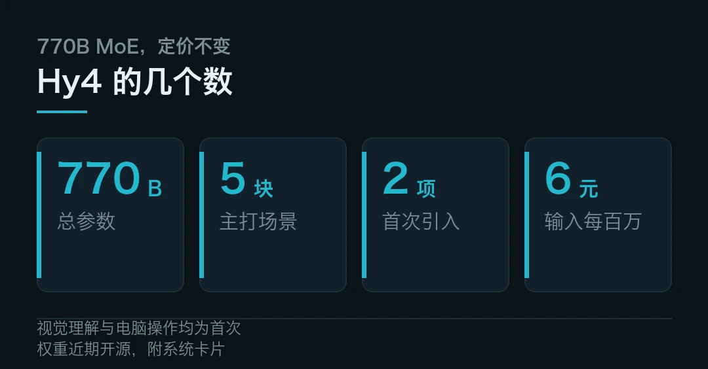
「最强开源」这个说法，谁给的
先泼半盆冷水再讲成绩，这样读起来才实。别急着信「最强」两个字。
成绩是，腾讯官方称 Hy4「首次跻身最强开源模型之列」。混元团队给的说法有具体基准撑着。在 ProgramBench、FrontierCode2.0、Agents' Last Exam v1.1 等多项测试中，Hy4 得分超过 DeepSeek-V4.1-Flash-1017。部分得分与 Kimi K3.1 Pro 接近，部分超过 GPT6.1 Sol。
冷水是同一句话的后半段。多数基准测试分数，仍低于 GPT6.1 Sol 和 Claude Opus 5.5。差距集中在前沿数学、长程开发、模型迭代这些高难项目上。
敢把「不如闭源」写进官宣，比只晒赢的更可信。
另一个背书来自外部。就在同一天开幕的乌镇世界互联网大会上，中国互联网络信息中心的报告提到，全球主流大模型调用榜单前六名全部来自中国团队。Hy4 赶在这个节点发布，时间选得不亏。
比参数更要紧的，是它会「干活」
770B 这个数字之外，Hy4 真正的变化在能力结构上。
一是视觉理解首次上车。它把视觉、推理和工具调用串起来，能做细粒度图像处理、复杂图表分析、数学视觉推理。官方给过一个直观例子，在 28 亿像素的航拍图里，定位一个两米宽的屋顶构件。以前只看得懂字的模型，现在看得懂图了。
二是电脑操作首次支持。命令行和图形界面混着用，能处理工作和生活里的各类任务。针对 Blender、CAD 这类专业软件，以及跨应用长程任务，混元做了专项训练。这一条我们放在技术篇细讲。
三是场景打得具体。官方把用武之地划成五块，视觉与电脑任务、前端与游戏开发、金融与办公、科研与模型研发、长期个人助理。口号是「为真实生产力而生」。
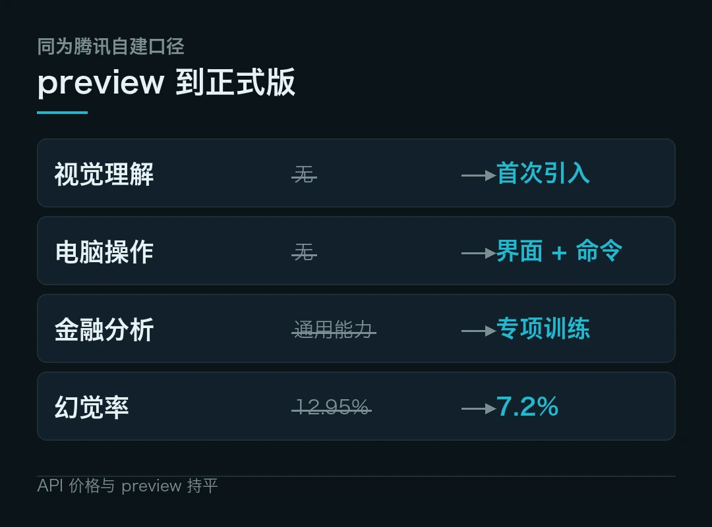
| 维度 | Hy4 preview | Hy4 正式版 || --- | --- | --- || 视觉理解 | 无 | 首次引入 || 电脑操作 | 无 | 命令行 + 图形界面 || 金融分析 | 通用能力 | 数千工作空间专项训练 || 开源 | preview 权重 | 近期开源 + 系统卡片 || API 价格 | 6 / 18 元 | 与 preview 持平 |
金融那块的投入，得单拎出来说。混元基于真实金融场景构建了数千个工作空间、上万个高质量任务，覆盖基金研究、证券分析、量化策略、资产配置、公司金融、财税会计。
它联合腾讯金融科技做了 213 位专家参与的众测，其中 153 位来自外部头部机构，七成有五年以上经验。579 个真实金融任务跑下来，Hy4 得 3.04 分。同场的 Kimi K3.1 Pro 与 GLM-5.3 各 2.68 分，DeepSeek-V4.1-Flash-1017 是 2.97 分。
针对这类场景最怕的胡编，混元还做了时效检索、多源信息整合与事实一致性校验的专项优化。自建测试里，幻觉率从 preview 版的 12.95% 降到 7.2%，因猜测导致的错误率从 23.1% 降到 5.6%。通用模型卷到头了，下一站在行业深度。
前端和游戏也在同一逻辑里。混元与腾讯游戏的专业开发者合作，强化了复杂交互、业务逻辑、状态管理、前后端联动，并适配 UE、Unity、Godot 等主流引擎。
相比 preview，GameDev 和 GameLogic 评测分别提升 19.1% 和 9.8%。科研方向则把复杂推理、科学编程和长程执行接起来，在覆盖 7 大学科、123 项可执行研究任务的 TenureTrail 内部评测里做了验证。
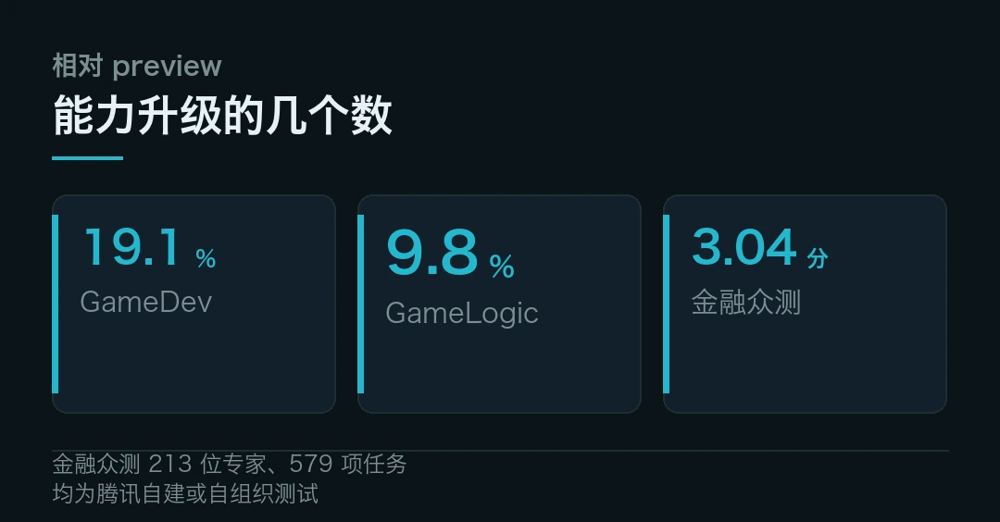
价格没涨，安全先划了线
这里有个容易被忽略的商业信号。
规模从不到 300B 一路加到 770B，价格凭什么不动？
先看事实。性能大幅超过 preview，定价却没动。输入 6 元、输出 18 元、缓存命中 0.3 元，都是每百万 tokens 的价格。即日起至 12 月 31 日，腾讯云 TokenHub 按刊例价 5 折计费；WorkBuddy 和 CodeBuddy 在 11 月 4 日到 15 日提供一定额度免费使用。Hy4 flash 主打性价比和推理速度，也在路上。
性能涨了不涨价，比跑分更能说明它想抢什么位置。
安全那头，混元这次把边界写进了发布稿。网络安全训练只纳入 PoC 生成、漏洞修复这类防守性数据，剔除漏洞利用、逆向、渗透等攻击性内容。
腾讯玄武和科恩实验室的安全专家，围绕密码分析、逆向工程、漏洞利用做了审计。结论是 Hy4 在这些进攻性能力上未展现突出风险。
生物安全给了个具体分数。开放式实验设计能力的前沿对标，Hy-BioExperimentBench 得 30.4 分，满分 100。
内部专家审计后说，模型基础生物知识掌握得不错，但把知识转成可执行实验方案的能力仍有限。尚未发现它能明显降低实施生化危害的门槛。这种「先自曝短板」的写法，比一句「安全可靠」有用得多。
研发节奏也能看出它接下来想干嘛。今年 2 月重建基础设施以来，混元平均每两个月推一个大版本，先放 Preview 收反馈，再迭代正式版。从 Hy3 系列不到 300B，到 Hy4 系列的 770B，规模一路爬。官方说下一代 Hy5 还会更大。
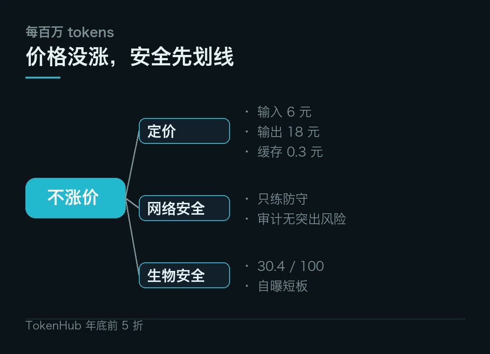
和 Hyra 2.0 的小闭环
昨天我们写过腾讯的 Hyra 2.0，那个让 AI 造工具的科研系统。Hy4 和它已经咬合上了。
Hy4 正在为下一阶段的递归自我改进（RSI）做准备，提升各种模型研发任务的能力。结合 Hyra 2.0，Hy4 优化了内部同架构小模型的预训练基础设施，还自动训练出一个在多项评测中优于官方版本的 Jev 模型。
开源清单里还有两个「模型造的模型」，单细胞表征基础模型 HyCell、物理场基础模型 HyPDE。都是 Hy4 协同 Hyra 2.0 研发的。混元想把「AI 辅助科研」的成果，变成社区能直接拿去用的工具。
模型造模型，这件事从论文叙事走进了产品清单。
还没落地的几件事
第一，「最强开源」是梯队不是冠军。同一个梯队里还有 DeepSeek、Kimi，各家基准互有胜负。这个称号的准确读法是「第一集团」，不是「第一名」。
第二，与闭源的差距是明说的。前沿数学、长程开发这些硬骨头还在。混元的说法是「持续稳健扩充训练规模去逼近」，翻译过来就是还得接着练。
第三，上面那些亮眼数字，几乎全是自家测的。金融众测、幻觉率、GameDev、TenureTrail、WorkBuddy 办公评测，均由腾讯组织或自建，尚未见独立第三方复跑。它们证明的是厂商眼中的上限，不是第三方眼里的平均水准。
第四，开源的具体条款待公布。权重、系统卡片都写进了计划，但 license 细节、开放范围还没落地。等真放出来才算数。
第五，生态位竞争更挤了。Hy4 已上线腾讯云 TokenHub、WorkBuddy 与 CodeBuddy、元宝、企业微信智能助理大圆、ima，API 同步接入 OpenRouter、Hermes、OpenCode。QQ、王者荣耀、微信读书等腾讯系产品也在陆续接入。开源模型之间下一轮比拼，未必只看跑分，还要看谁的工具链和社区支持更顺手。
开源模型的天花板又被顶高了一截，这当然算数。可这轮真正让我记住的，是腾讯把「还差在哪」和「哪些能力不练」一起摆上了台面。跑分迟早会被下一家刷过去，发布稿里愿不愿意写短板，倒是个不太会变的东西。
对用模型的人来说，一个知道自己缺什么的开源模型，比一个只报喜的闭源模型更好用。
Hy4 的参数规模、能力清单、开源计划、基准表现与「与顶尖闭源存在较大差距」的表述，均来自腾讯混元官方口径。基准对比来自第一财经报道的混元团队说法，尚未见独立第三方复跑。
金融众测、幻觉率、GameDev 与 GameLogic、TenureTrail、WorkBuddy 办公评测、安全审计与 Hy-BioExperimentBench 分数，均为腾讯自建或自组织测试口径。定价与优惠期限来自腾讯混元与腾讯云公告。
「调用榜单前六来自中国团队」来自中国互联网络信息中心《生成式人工智能应用发展报告（2026）》。
本文仅作事实转述，不构成任何投资建议。
本文信息来源
- 腾讯混元 — Hy4 官方发布（2026-11-04，官方） · hunyuan.tencent.com
- 腾讯技术工程 — 混元 Hy4，首次成为最强开源模型之一（2026-11-04，官方） · tencent.com
- 腾讯新闻 — Hy4 实测四大实用场景（2026-11-04，中文） · new.qq.com
- 腾讯网 — Hy4 来了，有眼力更有实力（2026-11-04，中文） · new.qq.com
- 澎湃新闻 — 混元 Hy4 正式发布，首次进入最强开源模型梯队（2026-11-04，中文） · thepaper.cn
- 齐鲁壹点 — 国产大模型再上新，混元 Hy4 正式发布（2026-11-04，中文） · 163.com
- AIBase — 腾讯 Hy4 正式版亮相，挤进最强开源阵营（2026-11-04，中文） · news.aibase.com
- 新浪财经 — 腾讯混元发布 Hy4，参数量 770B 近期开源（2026-11-04，中文） · cj.sina.com.cn
- 新华财经 — 乌镇峰会勾勒开源开放新图景（2026-11-04，中文） · cnfin.com
- GitHub — Tencent-Hunyuan 组织页（2026-11，官方，英文） · github.com
- OpenRouter — Hunyuan Hy4 model page（2026-11-04，官方，英文） · openrouter.ai
02AI 开始自己点鼠标了，四个实测比跑分更能说明问题
一张塞满东西的冰箱照片，能不能变成三天九顿饭的菜单？预算一百元，每顿做饭不超过四十分钟。
这不是让人来答的题。11 月 4 日发布的混元 Hy4，第一次拿起了鼠标和键盘。官方管这项能力叫电脑操作，Computer Use。它把「看屏幕」和「跑命令」接到了一起，模型可以自己点开软件、拖动窗口、在终端里敲指令，再把结果核对一遍。
以前模型多半只在你给它的对话框里干活。现在它伸手去用你桌面上那些软件了，边界一下子宽到不好定义。
```textHy4 · Computer Use 的三层动作看屏幕 | 读界面、认图标、理解图表动手 | 鼠标键盘点选，跨应用切换跑命令 | 命令行执行，核对输出与结果底座 | 沙箱里数百款软件反复练边界 | 信息不足会标疑点，任务冲突会报不可行```
三条路，为什么要合在一起
先问一句，会点鼠标有什么稀奇？自动化脚本二十年前就能干。
稀奇在「混着用」。纯图形界面操作慢，遇到没有按钮的功能就卡住；纯命令行快，可大量专业软件根本没开放命令行。Hy4 的做法是看情况切，界面上能点就点，需要批处理就开终端，中间还能调用工具。把两条腿接上，才走得了长任务。
这里有个容易被跳过的细节，模型得先「看懂」屏幕。视觉理解这次是和电脑操作一起上车的。官方给的例子是，在 28 亿像素的航拍图里，定位一个两米宽的屋顶构件。这种细粒度识别，正是点准一个菜单项的前提。
沙箱里练出来的
麻烦在于，真实桌面太乱了。弹窗、登录态、软件版本、网络抖动，每一步都可能把模型带偏。
混元和腾讯云 Agent Runtime 团队搭了沙箱，部署数百款应用软件，让模型在里面反复执行任务、验证结果，再回头改。Agent Runtime 也已面向企业和开发者开放。别只看「支持电脑操作」这六个字，训练环境才是壁垒。能不能练，比能不能想更决定上限。
专项训练打的是专业软件
通用点击不难，难的是专业软件。针对 Blender、CAD 这类界面复杂、层级深的工具，以及需要跨好几个应用连着跑的长程任务，混元做了专项训练。
这类活的特点是步骤多、反馈慢。改一个三维模型参数，得等渲染；改一份工程图，得回头看关联视图。人做会边做边检查，模型容易一路顺推到底。专项训练练的，就是这个「回头看」。
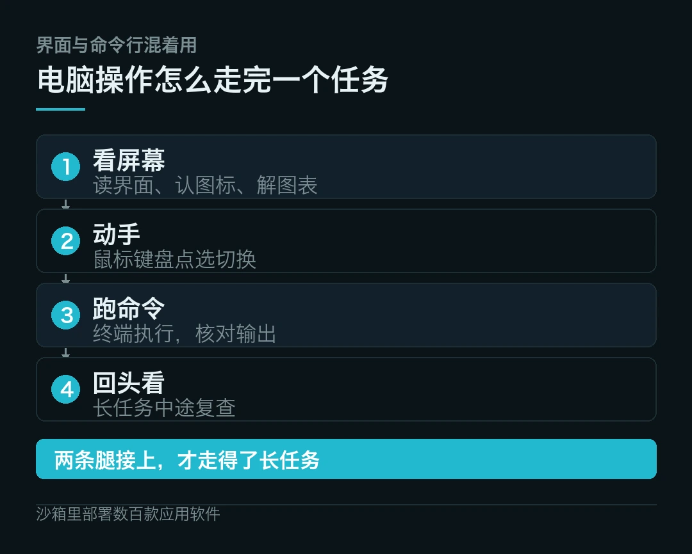
四个实测，比跑分有意思
官方放了几组实测，我挑四个说。
第一个是给九岁孩子做太阳系互动网页。提示词只有一句，模型交付了带轨道动画的行星页面。
它自己补了进度条，解释为什么水星转四圈地球才转一圈。还注明行星大小做过压缩，公转周期按真实数据来。这些细节，原指令里一项都没写。执行记录显示，它用 Chrome 做了 15 项交互检查。
第二个就是开头那台冰箱。模型把照片分区放大，逐层盘点食材，估了库存。
有意思的地方在它没装作全看清了。粉色真空包装可能是鸡肉也可能是鱼，白色大罐分不清酸奶还是奶油。它一共标出四处疑点，后续菜单对这几样做了保守处理。
后来又临时加条件，第二天多来两位客人，一位吃素、一位花生过敏，预算不涨，第三天不受影响。模型得同时盯住库存、预算、口味和禁忌，最后还给了防浪费的兜底安排。
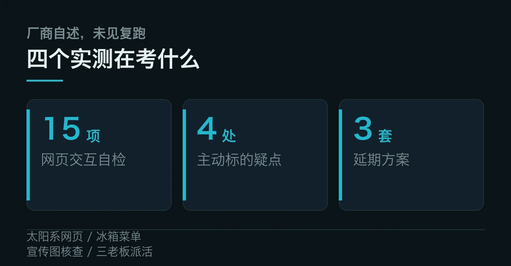
第三个是当财经编辑。给一张虚构公司的业绩宣传图，要求核查结论。模型发现三条结论里两条有问题。
宣传写营收增长 80%，实际从 1.2 亿到 1.5 亿，只有 25%。写利润大幅增长，金额却从 3000 万降到 1800 万，跌了 40%。它还揪出柱状图纵轴从 110 起画，把增幅显得夸张，另外算出客均收入其实降了约 16.7%。
第四个最值得琢磨。三家老板同时派活，所有任务必须串行，工作日 480 分钟，任务加起来 555 分钟。怎么排都至少有 75 分钟做不完。
模型没编一份「全部按时完成」的完美日程。它识别出冲突，给出三套方案，分别让不同老板承担延期，总超时 300、360、450 分钟。它甚至给了句建议，别在排序里找平衡，去把不可行的截止时间改成可行的。
一个永远答应的 agent，恰恰最不可靠。
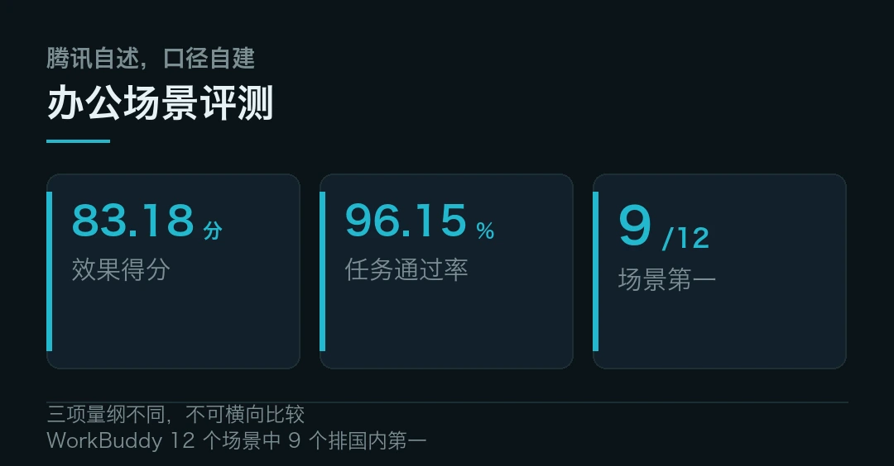
四个问号
听着挺好，还是得打几个问号。
第一，实测是厂商自己做的。四个案例都是官方挑选、官方叙述，没有第三方复跑。太阳系网页做得漂亮，不等于换个模糊需求也能稳。这类演示证明的是上限，不是平均水准。
第二，办公场景的自测数字要标明口径。WorkBuddy 评测里，Hy4 平均效果得分 83.18 分，任务通过率 96.15%，12 个场景中 9 个排国内第一。这些均为腾讯自述。
金融众测请了 213 位专家、覆盖 579 项真实任务。Hy4 得 3.04 分，同场的 Kimi K3.1 Pro 与 GLM-5.3 各 2.68 分，DeepSeek-V4.1-Flash-1017 是 2.97 分。同样是自家组织。
第三，幻觉确实降了，但没归零。自建测试里，幻觉率从 preview 版的 12.95% 降到 7.2%，因猜测导致的错误率从 23.1% 降到 5.6%。放在办公场景，一成的偏差仍要人兜底。
第四，权限边界没解决。模型能连聊天记录、邮件、文档、日程和会议，能跨应用改东西，好处是省事，代价是一旦判断错，影响面比写错一段文字大得多。哪些动作它自己能做，哪些必须交回人点确认，官方目前没给出完整清单。
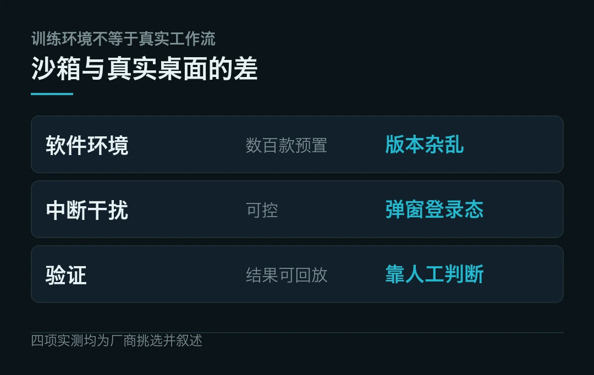
四个案例里，前三个做出来的东西很漂亮，第四个什么都没做成。偏偏是第四个最该看。模型在那儿没有交差，而是把「这活本身排不开」摊开给人看，还顺手给了三套承担延期的办法。
再往下走，评测的重点恐怕也得换。跑分能测出模型多聪明，测不出它会不会在信息不足时说没看清，会不会在要求冲突时说做不到。这两件事，才是把它放进真实工作流之前的门槛。
Computer Use 的能力描述（图形界面与命令行混合、Blender 与 CAD 专项训练、跨应用长程任务）、沙箱与数百款应用软件、视觉识别案例（28 亿像素航拍图定位两米构件），均来自腾讯混元官方口径。
四个实测案例（太阳系网页、冰箱菜单、宣传图核查、三老板派活）的过程与数字，来自腾讯新闻《实测四大实用场景》一文。这是厂商自述，未见独立第三方复跑。
WorkBuddy 办公评测（83.18 分、96.15%、12 个场景中 9 个国内第一）、金融众测（213 位专家、579 项任务、3.04 分）与幻觉率变化，均为腾讯自建或自组织测试的口径。
本文仅作事实转述，不构成任何投资建议。
本文信息来源
- 腾讯混元 — Hy4 官方发布（2026-11-04，官方） · hunyuan.tencent.com
- Tencent Hunyuan — Hy4 model card and Computer Use（2026-11-04，官方，英文） · github.com
- 腾讯技术工程 — 混元 Hy4 发布，首次成为最强开源模型之一（2026-11-04，官方） · tencent.com
- 腾讯新闻 — Hy4 实测四大实用场景（2026-11-04，中文） · news.qq.com
- 腾讯网 — Hy4 来了，有眼力更有实力（2026-11-04，中文） · new.qq.com
- 腾讯云 — Agent Runtime 沙箱环境说明（2026-11，官方） · cloud.tencent.com
- GitHub — Tencent-Hunyuan Hy4 repository（2026-11，官方，英文） · github.com
- OpenRouter — Hunyuan Hy4 model page（2026-11，官方，英文） · openrouter.ai
- OSWorld — Computer Use benchmark（2026-11，官方，英文） · os-world.github.io
03AMD 这份财报，把服务器 CPU 的存在感重新拉了回来
大家聊 AI 算力，眼睛都盯着 GPU。可这一季 AMD 交出来的账本里，撑住增长的一半力气，来自一颗不太起眼的服务器 CPU。
11 月 4 日，AMD 公布 2026 财年第三季度财报。营收 134 亿美元，同比增长 45%，创下季度新高。真正扎眼的是数据中心事业部，85 亿美元，同比增长 97%，差不多翻了一倍。
第六代 EPYC 处理器 Venice 已经在第三财季开始「创收出货」，首批基于它的 OEM 整机，第四财季上市。芯片先交到 OEM 和云厂商手里，整机随后跟上，这是服务器平台换代的常规节奏。
AI 这轮行情里，CPU 没被挤下牌桌。它被拉去当了机架的地基。
```textAMD Q3'26 · 分部营收（亿美元）数据中心 85 +97%客户端与游戏 37 -8%嵌入式 11 +29%合计 134 +45%口径 GAAP，同比；客户端 29 亿 / 游戏 7.73 亿```
97% 是怎么来的
先把账拆开，别只看总数。
数据中心这 85 亿，AMD 财报给的归因是两条，EPYC 处理器的强劲需求，加上 Instinct MI450 系列 GPU 上市。该分部运营利润 29 亿美元，同比增长约 62%，增速比营收慢，说明规模上去的同时，投入也在加。
其余两块冷热不均。客户端与游戏合计 37 亿美元，同比下降 8%。这里面客户端 29 亿、同比涨约 7%，靠锐龙移动处理器撑着；游戏只有 7.73 亿，同比跌了 40%，半定制和图形业务收缩是主因。嵌入式 11 亿，同比增长 29%，汽车、通信、工业这些终端在回暖。
利润那头也好看。按 GAAP 口径，毛利率 54%，营业利润 28.3 亿美元、同比增长 123%，净利 24.3 亿、增长 95%，摊薄每股收益 1.46 美元。非 GAAP 口径下毛利率 56%，每股收益 2.09 美元。
一张账本里，增长引擎和拖后腿的业务差了上百个百分点，这种撕裂比总数更有信息量。
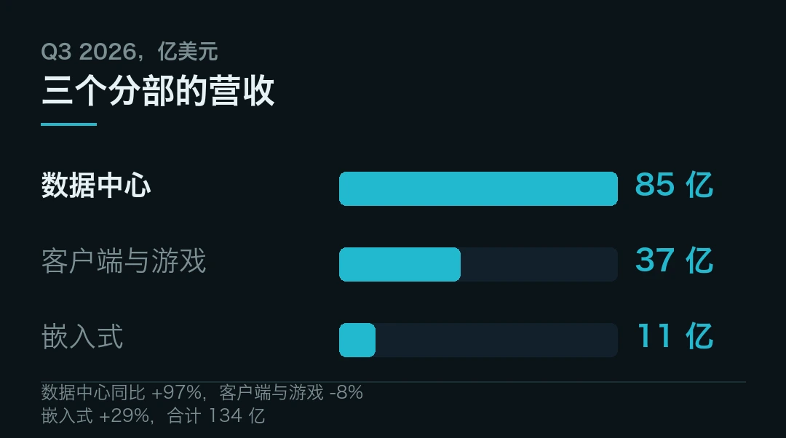
Venice 到底是什么
Venice 是第六代 EPYC，面向云、企业和高性能计算市场。
架构是 Zen 6，工艺用到 2nm。AMD 此前给的说法是，性能、能效、计算密度三个维度都有明显提升，客户需求达到「前所未有的高度」。注意一点，核心数量、加速频率、三级缓存、内存与 PCIe 通道数、TDP 区间这些具体参数，这次财报沟通里一项都没披露。采购方不宜拿早期传闻当配置表用。
有个数字能说明它的生态位。苏姿丰在电话会上提到，EPYC 已是公有云部署最广泛的服务器芯片，头部云厂商推出的相关实例超过 540 款。合作伙伴敲定的 Venice 平台方案有 240 余款，比上一代多出两成。
为什么芯片先交、整机要等一个季度？中间那一轮适配才是真门槛。处理器交出去之后，主板、内存、固件、散热要一起验证完，才能形成可批量部署的整机。首批 OEM 系统落在第四财季，也就是 9 月 27 日到 12 月 26 日这个窗口。
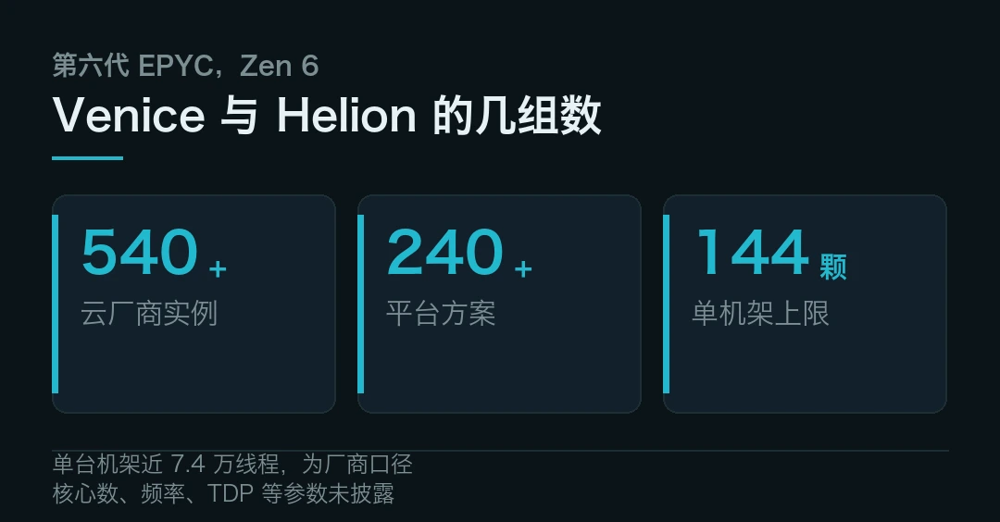
从卖芯片，到卖整机架
更值得说的变化在交付形态。
AMD 推出了基于 Venice 的纯 CPU 参考设计 Helion。按官方口径，单台机架最高能塞进 144 颗 Venice、跑近 7.4 万个线程。这是它自称的行业最高部署密度。
AI 那一侧则是 Helios 开放式机架，符合 OCP 标准，提供高密度纯 CPU 和 CPU 加 GPU 混合两种配置。本季度 MI455X 启动批量出货，Anthropic、Meta、微软、OpenAI 和甲骨文云基础设施已在首批 Helios 机架上跑模型与工作负载，这些系统搭的是 Instinct MI450 系列 GPU 加第六代 EPYC CPU。
客户买的不再是一颗芯片，是一整柜能直接上电的东西。
超算那头也有落点。EuroHPC 选定 Instinct MI430X 与第六代 EPYC，用来建欧洲下一代旗舰超算 Lumiai，预计 2027 年下半年投用。软件侧同步发了 ROCm 10，新增智能代理性能调优，官方说能把原本数周的工程优化压到数小时。
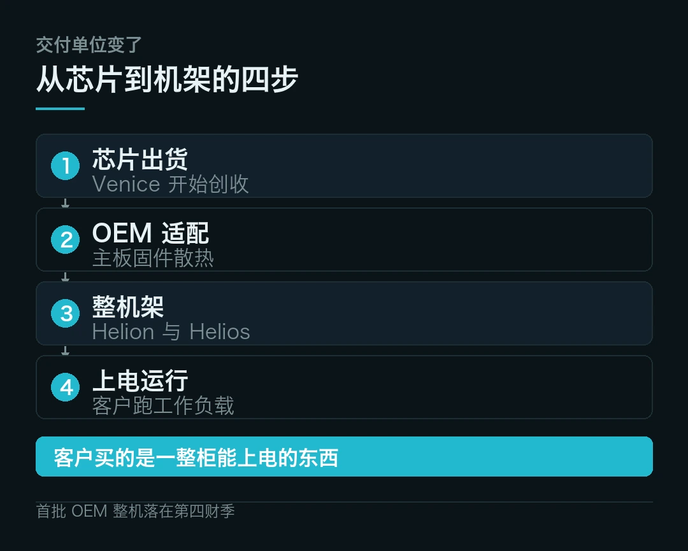
账本之外
热劲过去，几个问题得摆出来。
第一，指引很好，但只是指引。AMD 预计第四财季营收约 170 亿美元、上下浮动 3%，中值对应同比增长约 66%。苏姿丰说，数据中心 AI 营收将首次大幅超过服务器 CPU 营收。
CFO 胡锦给 2027 年的说法更进取，整体营收增速超 80%，服务器收入同比大幅增长，数据中心营收占比突破 80%。这些全是公司自己的预测，不是已发生的事。
第二，供给和成本都在绷着。苏姿丰承认，上游零部件涨价推高了整机价格，抑制消费端出货。她预计 2027 年全球 PC 出货量会出现两位数同比下滑。
为承接数据中心订单，本季度库存环比增加约 30 亿美元至 115 亿。她也说，已锁定明年所需的核心零部件，包括晶圆、基板、先进封装与存储。别只看「锁到了」三个字，锁得到，不等于不涨价。
第三，「广泛部署」「最高密度」这类说法均为厂商口径。EPYC 实例数、Helion 的 144 颗与 7.4 万线程、客户需求「前所未有」，都出自 AMD 财报与电话会，暂无第三方核验。
第四，客户名单不等于收入确认。Anthropic、Meta 这些名字出现在首批 Helios 部署里，能证明产品进了门，证明不了订单规模、单价和续约节奏。机架级方案从验证到大规模采购，通常还要走好几个季度。
麻烦在于，这几件事都不在财报里，得等后面几个季度才看得清。
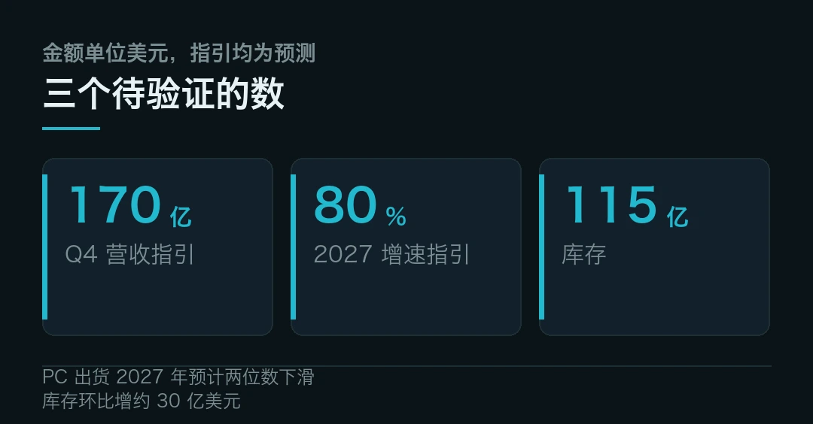
所以别只盯着那 97%。更值得琢磨的是交付单位变了，从一颗芯片，变成一整柜能直接上电的东西。谁先把整柜做顺、把验证周期压短，谁就拿到了下一轮议价权。CPU 在这个新单位里不是配角，是把 GPU、内存、网络和散热串起来的那个底座。
至于这轮高增长能撑多久，得看 2027 年那些已锁定却还没交付的零部件，最后变成多少真出货。等几个季度再回头看，比现在下结论靠谱。
营收 134 亿美元（同比 +45%）、数据中心 85 亿（+97%）、客户端与游戏 37 亿（-8%）、嵌入式 11 亿（+29%）、GAAP 与非 GAAP 利润口径，均来自 AMD 财报。Venice 于第三财季开始创收出货、首批 OEM 整机第四财季上市、240 余款平台方案、540 余款云实例、Helion 单机架 144 颗与近 7.4 万线程、Helios 首批客户名单、ROCm 10、Lumiai 超算，来自苏姿丰电话会与 AMD 官方披露，均为厂商口径。
第四财季约 170 亿美元营收指引、2027 年营收增速超 80% 与 PC 出货两位数下滑，属于公司前瞻预测，不构成事实。工艺仅表述为 2nm，未涉及代工厂信息。
本文仅作事实转述，不构成任何投资建议。
本文信息来源
- AMD Newsroom — AMD Reports Third Quarter 2026 Financial Results（2026-11-04，官方，英文） · amd.com
- AMD — 2026 年第三季度财报（2026-11-04，官方） · amd.com
- 腾讯新闻 — 苏姿丰官宣 EPYC Venice 处理器已赚钱出货（2026-11-04，中文） · news.qq.com
- 凤凰网科技 — AMD 苏姿丰官宣 EPYC Venice 已营收出货（2026-11-04，中文） · tech.ifeng.com
- 泡泡网 — Venice 已营收出货，OEM 整机本季上市（2026-11-04，中文） · pcpop.com
- 芯东西 — AMD 三季报，数据中心业务营收增 97%（2026-11-04，中文） · zhidongxi.com
- AMD — EPYC Venice 产品资料（2026-11，官方，英文） · amd.com
- EuroHPC Joint Undertaking — Lumiai supercomputer selection（2026-11，官方，英文） · eurohpc-ju.europa.eu
- Open Compute Project — Helios rack specification（2026-11，官方，英文） · opencompute.org
04科技速览 15 条，从免疫图谱到火箭与卫星，还有眼镜和 PC
今天这期速览加厚了，十五条。科学五条、产业五条、消费与互联网五条，一张图配一组，慢慢看。
海外 · 近两千人、五百万个细胞，画出一张免疫图谱
先看最硬的一项。《自然》同期上线三篇论文。澳大利亚加文医学研究所、默多克儿童研究所等团队做了 TenK10K 项目，测了近 2000 人、500 多万个单个免疫细胞。
他们把数千万种遗传变异，和 16 种疾病、44 项血液特征对上。最后找出近 1500 个可能致病的基因。
三篇各有侧重。一篇分析 2.1 万个基因，找到 18 万多种影响表达的变异。其中 893 个基因与疾病相关，以往全血研究却没抓到。一篇盯串联重复序列，找出 6.9 万多个相关变异。第三篇看染色质可及性，定位 24 万多个变异，把超过 2.8 万个 DNA 区域和它调控的基因连起来。
过去查全血，像把一整杯果汁拿去化验。这次是逐个果子尝。
团队举了个例子。有个变异只在自然杀伤细胞里抬高 OSM 基因表达，顺带推高炎症性肠病风险。这种细胞特异的线索，正是找新药靶的入口。
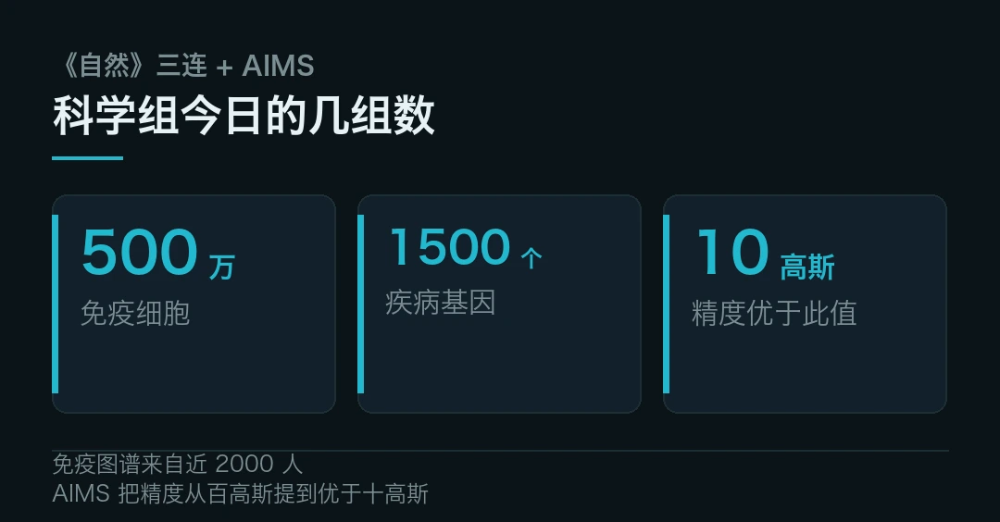
国内 · AIMS 望远镜头一回拍到耀斑下方磁场变弱
中国科学院国家天文台邓元勇团队，用自主研制的 AIMS 中红外望远镜发了篇论文。成果登在《自然·天文》上，首次观测到耀斑脉冲相期间，太阳低层大气磁场明显减弱。
难在哪？耀斑会搅乱光谱轮廓。传统靠偏振推磁场的方法直接失效。耀斑又快，几分钟就完事，单次测量时间短、信噪比低。
AIMS 换了个思路，直接量磁场造成的谱线分裂。它用高塞曼裂距的中红外谱线，把测量精度从百高斯级提到优于十高斯。
团队首次拿到一个 X1.5 级耀斑的光谱演化数据，又用动力学大气模型核了一遍。审稿人的评价是，这类特殊观测尚属首次实现。能量怎么从磁场里放出来，第一次有了直接的尺子。
海外 · 成年人的大脑，确实还会长新的神经元
这场争论拖了几十年。英国《新科学家》10 月 31 日封面报道，最新研究借单细胞基因分析加人工智能模型，给成年海马体存在神经发生提供了有力证据。
意义在后面。神经发生和认知能力密切相关。如果能定向激活，中风、痴呆、抑郁这些病就多一条思路。
但别急着乐观。过度激活有风险。而且这件事主要局限在海马体，治不了所有脑部病症。未来的疗法大概率要靶向化、多药联合。
国内 · 用「连接」的办法，做出人工螺旋高分子
华东理工团队在《自然·纳米技术》报告了一种超分子连接策略，把人工螺旋高分子的构筑往前推了一步。螺旋结构在自然界里是蛋白质和 DNA 的基本形貌，人工要稳定地造出来一直不好控。
这类结构的用处偏底层，手性识别、分子器件、选择性催化都指得上。目前还停在实验室合成与表征阶段，离材料量产有距离。
国内 · 一颗芯片，一次分完 21 种 HPV 型别
中科院苏州医工所给出一套单芯片分型方案，一次能区分 21 种人乳头瘤病毒型别。筛查场景最在意分型准和通量高。把多步反应压到一颗芯片上，成本和耗时都有下降空间。
注意一点，报道给的是技术方案与实验结果。临床注册、大规模人群验证还没见披露。别把「做出来了」读成「能用了」。
国内 · 智元第 2 万台机器人下线，抛出一个叫 Worken 的新单位
产业这头，最该记的不是台数，是一个词。11 月 3 日，智元第 2 万台远征 A3 Ultra 交付长隆集团，从 1 万台到 2 万台不到半年。
同场发布的 Worken，由 Work 和 Token 拼成，用来度量「有效智能工时」。算法是活跃机器人数量，乘自主工作时长，再乘产出效能比。
智元联合创始人彭志辉那句话挺直白。生产了多少台，不等于真实世界多了多少生产力。开机八小时，不代表创造了八小时价值。一次任务成功，也不代表能稳定干一个月。行业从晒参数表，走到了交工时表。
背景也别漏。Counterpoint 统计，2026 上半年全球人形机器人六成以上卖给了舞台和实验室，真正进厂进仓的不足两成。智元自己披露上半年收入接近 20 亿元。
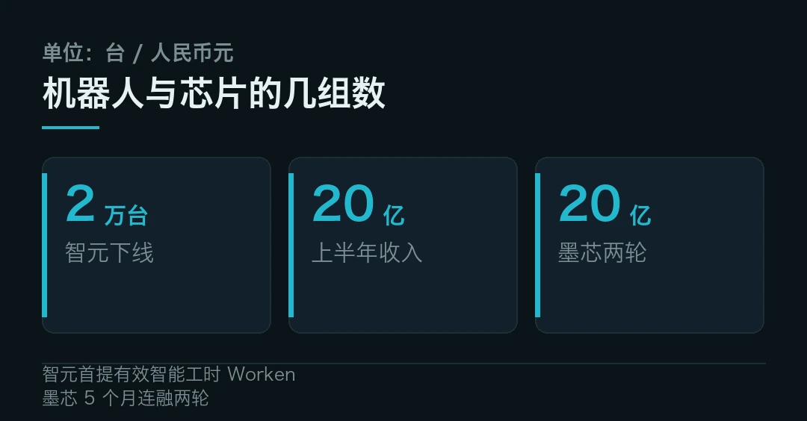
国内 · 墨芯五个月连融两轮，近 20 亿砸向稀疏计算
11 月 3 日，AI 推理芯片企业墨芯宣布完成近 10 亿元 C+ 轮。距上一轮近 10 亿元只隔了 5 个月，两轮累计近 20 亿。资金投向稀疏专用推理芯片的全栈升级和下一代预研。
逻辑不复杂，推理负载涨得凶。国家数据局披露，今年 3 月我国日均 Token 调用量已超 140 万亿，比 2025 年底增长四成多。
墨芯走的路子是从源头少算。靠权重与激活双稀疏跳过无效运算，让同等硬件多扛些有效推理。公司称三季度营收实现数倍增长，下一代 SP200 加速卡计划年底前发布。
麻烦在于，稀疏是算法、架构、编译器、工具链一起活。哪一环没接住，理论上的节省就变不成实测性能。
海外 · Fal 估值升至约 160 亿美元，推理生意被重新定价
据媒体报道，AI 推理服务商 Fal 新一轮估值约 160 亿美元，较上一轮明显抬升，英伟达参与投资。一家做「把模型跑起来」的公司拿到这个价，说明资本的目光正从训练往推理挪。
这条要打个问号。估值与投资方均为媒体口径，未见公司逐项确认，先记着就好。
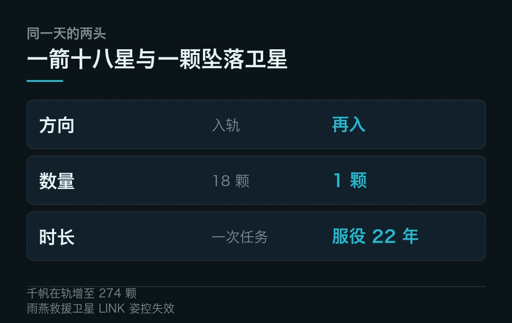
国内 · 力箭二号一箭 18 星，千帆在轨增至 274 颗
11 月 3 日 8 时 15 分，中科宇航力箭二号遥二在东风商业航天创新试验区点火。它把千帆极轨 21 组共 18 颗卫星送入约 800 公里轨道，千帆星座在轨数增至 274 颗。
这是力箭二号第二次飞行，也是头一回执行大规模组网。今年 3 月首飞解决「能不能飞」，这次要答「能不能批量、稳定交付」。
为了入轨精度，二级滑行时间比首飞增约两倍，团队用了两次点火。18 颗星共用一套分离解锁装置，靠分批分离、精确编排避免互相干扰。
火箭是「通用助推器核心」构型，由三个相同芯级组合。近地轨道运力 12 吨，500 公里太阳同步轨道 8 吨。单发产品准备周期压短三分之一，测发周期压短四分之一。
海外 · 服役 22 年的雨燕望远镜坠落，救援没能赶上
同一天，另一颗卫星往下走。美、英、意合制的「雨燕」空间望远镜，因太阳活动峰年让高层大气膨胀、阻力超出预期，轨道快速衰减，预计 11 月 4 日再入。
NASA 说大部分会在大气层烧毁。钛制部件和镍制镜片组件可能幸存，地面人员受伤概率约 1/2100。
它 2004 年发射，原设计寿命两年，最终跑了 22 年。期间观测超过 2000 次伽马射线暴、1400 多次超新星，支撑约 7000 篇论文。
更让人唏嘘的是那次救援。NASA 曾签合同造一颗 LINK 卫星，想用机械臂抓住雨燕、抬高轨道。LINK 今年 7 月升空后姿控故障，在太空失控旋转。8 月中旬任务宣告失败。能修的都试过了，最后还是交给大气层。
海外 · 谷歌把搜索和 AI 绑在一起，学校禁 AI 就连搜索也用不了
消费这头，先说个有争议的政策。据媒体报道，谷歌宣布 2027 起，K-12 学校若禁用 Gemini 等 AI 功能，学生连 Google Search 也用不了。理由是「搜索与 AI 已无法分离」。
争议点不在技术，在捆绑。教育场景的采购本来就要过隐私、合规、内容审核好几关。把搜索这一基础工具和 AI 绑成一体，学校的议价空间会小很多。目前细节与适用范围仍是媒体口径，等官方条款。
国内 · 直播间半小时卖出 10 万份千问会员
李佳琦直播间半小时售出约 10 万份千问会员，折算权益约 2 万亿词元。这个数字有意思的地方不在带货，在 AI 订阅第一次被当成标准快消品，铺到大众流量场。
模型能力看不见，词元被摆上货架就看得见了。
当然，售出不等于留存。会员到底有多少人会续，有多少额度真被用掉，还得等下一季的数据。
国内 · 影目 AI 眼镜 OTA，新增通话翻译
影目给自家 AI 眼镜推了 OTA，新增通话翻译。眼镜这类设备最怕「买来即定型」。能靠软件持续加能力，生命周期才算立住。翻译又恰好是戴在脸上比掏手机更顺手的少数场景之一。
具体支持语种、延迟和离线能力，公告里没说全，先不替它补。
海外 · 高通 AI Hub 上线，端侧模型有了统一入口
高通把分散的端侧模型、工具与部署文档收进 AI Hub，让开发者在一个地方找模型、做适配。端侧 AI 一直卡在碎片化，芯片型号多，算子支持不一，每家都要重调一遍。有个统一入口，至少省掉重复的踩坑。
生态能不能起来，看的是后续有多少第三方模型愿意进来，而不是入口本身做得多漂亮。
海外 · 微软给 AI PC 划了四档，8GB 内存也能进场
微软的「混合智能」AI PC 路线图把硬件分成四档。Tier 0 从 8GB 内存起步，把轻活放在端上、重活交云端。往上逐档加本地能力，Tier 3 超过 128GB，可本地跑前沿模型。
这比过去「40 TOPS 起步」的硬门槛务实。承认大多数机器跑不动大模型，云端和端侧各干各的，反而更接近真实用法。
分档是路线图，不是已落地的产品规格。各家 OEM 最终怎么配，还得看真机。
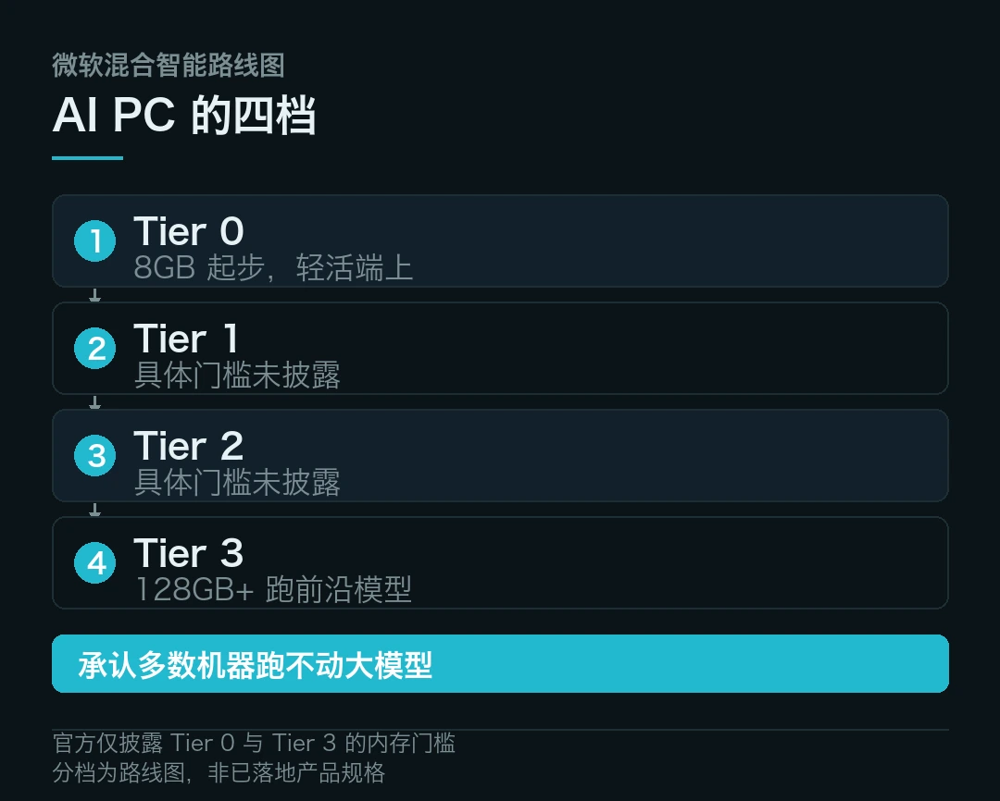
十五条里，科学在把尺度往下钻，从一滴血钻到单个细胞，从一片日面钻到十高斯。产业在把标准往上抬，机器人开始交工时表，火箭开始比交付节奏。消费端则在把 AI 拆成能买、能升级、能分档的东西。
一头往细里走，一头往实里走，中间夹着一颗修不好、只好让它落下来的老卫星。
收尾还是回到智元那句大白话。造出来多少，不等于用起来多少。放在今天的模型、机器人、眼镜和 PC 上，都成立。
免疫图谱的三篇《自然》论文属于 TenK10K 项目，近 2000 人、500 多万免疫细胞、约 1500 个疾病相关基因、16 种疾病与 44 项血液特征，发表于 2026-10-28，经人民网健康等转述。
AIMS 耀斑磁场减弱研究来自中国科学院国家天文台与《自然·天文》，X1.5 级耀斑、「百高斯到优于十高斯」为官方口径。成人大脑神经发生为英国《新科学家》2026-10-31 封面报道，经参考消息编译，属研究结论而非临床疗法。
人工螺旋高分子、单芯片 21 种 HPV 分型为期刊与机构披露，量产与临床验证状态未在报道中确认。
智元 Worken、第 2 万台下线、上半年收入近 20 亿元，为公司自述与媒体报道。六成以上流向舞台与实验室引自 Counterpoint 统计。
墨芯近 10 亿元 C+ 轮、两轮累计近 20 亿、三季度营收数倍增长为公司与投资方口径，日均 Token 超 140 万亿引自国家数据局。Fal 约 160 亿美元估值与英伟达参投为媒体口径，未见公司确认。
力箭二号遥二发射数据来自中科宇航与广州日报等报道。雨燕再入时间、1/2100 伤人概率、22 年成果数字来自 NASA 声明与澎湃新闻、观察者网报道，再入时间为预测值。
谷歌教育政策、高通 AI Hub、微软 AI PC 四档路线图、影目眼镜 OTA、直播间 10 万份千问会员，均为媒体汇总口径。具体条款、支持范围与产品规格未见厂商逐项确认，请以官方后续公告为准。
本文仅作事实转述，不构成任何投资建议。
本文信息来源
- Nature — TenK10K: rare and common variants shape single-cell immune gene expression（2026-10-28，一手，英文） · nature.com
- 人民网健康 — 揭示遗传变异影响免疫系统的最详尽图谱绘成（2026-11-04，中文） · health.people.com.cn
- 中国科学院国家天文台 — AIMS 观测到耀斑期间磁场减弱（2026-11-03，一手） · bao.ac.cn
- 中国新闻网 — 中国 AIMS 望远镜发现耀斑磁场明显减弱（2026-11-04，中文） · chinanews.com
- New Scientist — Adult brains do grow new neurons（2026-10-31，一手，英文） · newscientist.com
- 参考消息 — 成人大脑仍可产生新神经元（2026-11-04，中文） · cankaoxiaoxi.com
- Nature Nanotechnology — Supramolecular linker strategy for helical polymers（2026-11，一手，英文） · nature.com
- 中国科学院苏州生物医学工程技术研究所 — 单芯片 21 种 HPV 分型方案（2026-11，一手） · sibet.cas.cn
- 腾讯新闻 — 人形机器人迈向部署态，智元提出 Worken（2026-11-02，中文） · news.qq.com
- 界面新闻 — 墨芯完成 C+ 轮融资，商业化提速（2026-11，中文） · jiemian.com
- 中国经济新闻网 — 资本持续加注墨芯路线（2026-11，中文） · cet.com.cn
- 广州日报 — 一箭 18 星，力箭二号成功发射（2026-11-04，中文） · gzdaily.dayoo.com
- 中科宇航 — 力箭二号遥二组网发射通报（2026-11-03，官方） · cas-space.com
- 澎湃新闻 — 失控天文卫星雨燕即将坠落（2026-11-04，中文） · thepaper.cn
- 观察者网 — 雨燕坠落，碎片伤人概率约 1/2100（2026-11-04，中文） · m.guancha.cn
- Google — 搜索与 AI 融合及教育政策说明（2026-11，官方，英文） · blog.google
- Microsoft — Hybrid AI PC tier roadmap（2026-11，官方，英文） · blogs.microsoft.com
- Qualcomm — AI Hub 上线说明（2026-11，官方，英文） · qualcomm.com
- 36 氪 — 千问会员直播与 AI 眼镜 OTA 相关报道（2026-11，中文） · 36kr.com
- Nature Astronomy — Magnetic field weakening during an X1.5 flare（2026-11，一手，英文） · nature.com
本文首发于公众号「YITENG」。原文：daily.html
留言